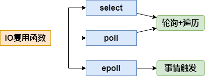
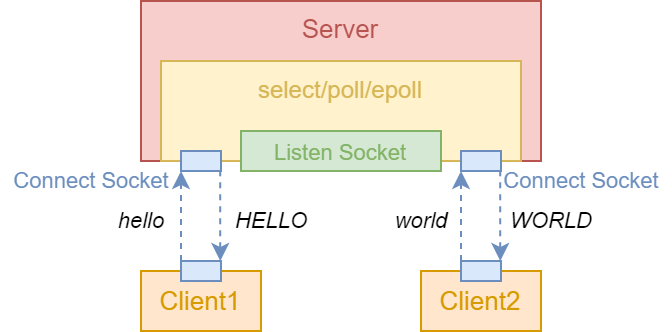
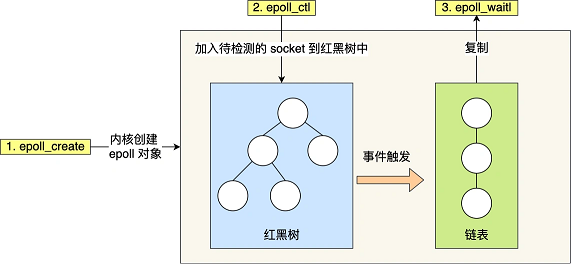
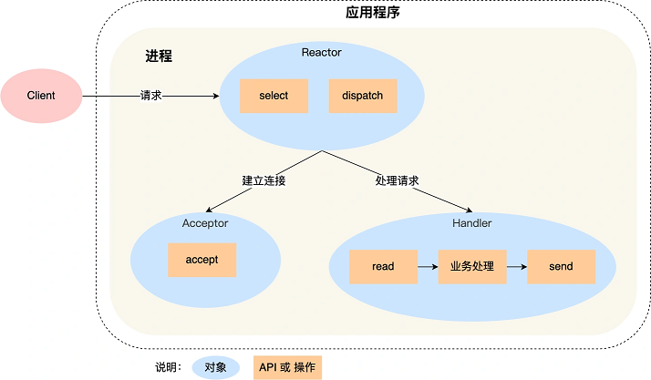
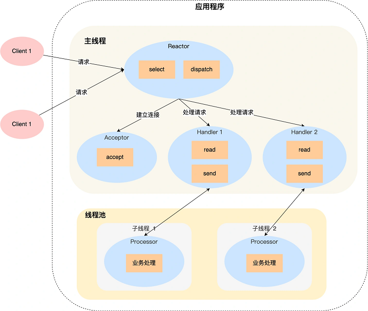
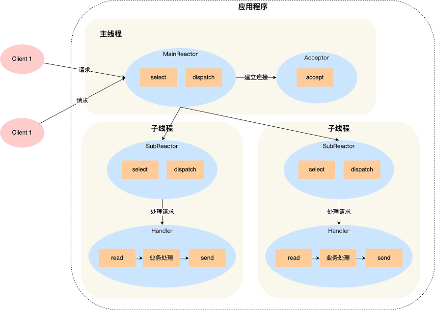

IO复用¶
《Linux高性能服务器编程》 - 游双 的第9章，《UNIX网络编程卷1》 - 第三版 的第6章，以及《小林coding - 网络系统》的读书笔记，本文中的所有代码可在GitHub仓库中找到
IO复用函数¶

Linux提供了select()，poll()，epoll()三个函数，用于监控文件描述符上发生的事件，实现IO复用。其中，select()，poll()是类UNIX系统都提供的，而epoll()是Linux独有的。三者的区别如下：
| 系统调用 | select | poll | epoll |
|---|---|---|---|
| 事件集合 | 监听可读、可写及异常三种事件 | 统一处理所有事件类型 | 内核通过一个事件表管理事件 |
| 索引就绪事件时间复杂度 | O(n) | O(n) | O(1) |
| 工作模式 | 电平触发LT | 电平触发LT | 电平触发LT/边沿触发ET |
下面通过三个例子，分别介绍这三个函数的使用方法。这三个例子可同时处理新的客户端网络连接和多个客户端输入，并将客户端传来的字符串转换成大写后回传给客户端：

select函数¶
#include <sys/select.h>
// 监听三组文件描述符上发生的事件
// nfds - 被监听的文件描述符的总数，通常是select监听的所有文件描述符的最大值加1
// readfds, writefds, exceptfds - 记录要监听的三种类型的文件描述符
int select(int nfds, fd_set* readfds, fd_set* writefds, fd_set* exceptfds, struct timeval* timeout);
- 文件描述符就绪条件
- socket可读
- 接收缓存区的字节数大于或等于
SO_RCVLOWAT - socket通信的对方关闭连接，此时对该socket的读操作将返回0
- 监听socket上有新的连接请求
- socket上有未处理的错误
- 接收缓存区的字节数大于或等于
- socket可写
- 发送缓存区的字节数大于或等于
SO_SNDLOWAT - socket的写操作被关闭
- socket使用非阻塞connect连接成功或者失败(超时)之后
- socket上有未处理的错误
- 发送缓存区的字节数大于或等于
- socket异常
- socket上接收到外带数据，发送的时候带上
MSG_OOB标志
- socket上接收到外带数据，发送的时候带上
- socket可读
例子"select"利用select()函数，完成了对客户端连接和客户端输入的监听。需要注意的是，select()调用返回后，用户需要遍历所有文件描述符，找到发生了事件的文件描述符后，再进行处理。并且，每次调用select()前都要重新设置文件描述符，因为内核会修改传入的文件描述符。
int main(int argc, char *argv[])
{
...
int listen_fd = socket(PF_INET, SOCK_STREAM, 0);
int on = 1;
setsockopt(listen_fd, SOL_SOCKET, SO_REUSEADDR, &on, sizeof(on));
// 配置监听socket为非阻塞
ioctl(listen_fd, FIONBIO, (char *)&on);
bind(listen_fd, (struct sockaddr *)&address, sizeof(address));
listen(listen_fd, 5);
fd_set read_fds_copy;
FD_ZERO(&read_fds_copy);
FD_SET(listen_fd, &read_fds_copy);
int max_fd = listen_fd;
struct timeval timeout;
char buf[1024];
fd_set read_fds;
FD_ZERO(&read_fds);
while (true)
{
// 每次调用select前都要重新在read_fds中设置文件描述符，因为事件发生之后，文件描述符将被内核修改
memcpy(&read_fds, &read_fds_copy, sizeof(read_fds_copy));
timeout.tv_sec = 60; // seconds
printf("[Server] Waiting on select()...\n");
select(max_fd + 1, &read_fds, nullptr /*write_fds*/, nullptr /*exception_fds*/, &timeout);
if (rc == 0)
{
printf("[Server] select() timeout, end program\n");
break;
}
for (int i = 0; i <= max_fd; ++i)
{
// file descriptor `i` has read event
if (FD_ISSET(i, &read_fds))
{
if (i == listen_fd)
{
printf("[Server] Listening socket is readable\n");
struct sockaddr_in client;
socklen_t client_addrlength = sizeof(client);
int conn_fd = accept(listen_fd, (struct sockaddr *)&client, &client_addrlength);
printf("[Server] New incoming connection %d, ip: %s, port: %d\n",
conn_fd, inet_ntoa(client.sin_addr), ntohs(client.sin_port));
FD_SET(conn_fd, &read_fds_copy);
if (conn_fd > max_fd)
max_fd = conn_fd;
}
else
{
printf("[Server] Connection socket %d is readable\n", i);
memset(buf, '\0', sizeof(buf));
int n_bytes = recv(i, buf, sizeof(buf) - 1, 0);
if (n_bytes == 0)
{
printf("[Server] Remote client was closed, so close connection %d\n", i);
close(i);
FD_CLR(i, &read_fds_copy);
if (i == max_fd)
{
while (FD_ISSET(max_fd, &read_fds) == false)
max_fd -= 1;
}
break;
}
printf("[Server] Get %d bytes from connection %d : %s\n", n_bytes, i, buf);
for (int j = 0; j < n_bytes; j++)
buf[j] = toupper(buf[j]);
send(i, buf, n_bytes, 0);
}
}
}
}
for (int i = 0; i <= max_fd; ++i)
{
if (FD_ISSET(i, &read_fds_copy))
close(i);
}
return 0;
}
启动服务后，通过nc命令，连接两个客户端到服务器，分别传送"hello"和"world"字符串给服务器，观察服务器是否回传大写的"HELLO"和"WORLD"。再分别退出客户端连接，观察服务端打印的信息。最后等待60秒后，由于服务端没有收到任何信息，超时退出。
> ./main 127.0.0.1 1234
[Server] Waiting on select()...
[Server] Listening socket is readable
[Server] New incoming connection 4, ip: 127.0.0.1, port: 56274
[Server] Waiting on select()...
[Server] Listening socket is readable
[Server] New incoming connection 5, ip: 127.0.0.1, port: 56280
[Server] Waiting on select()...
[Server] Connection socket 4 is readable
[Server] Get 6 bytes from connection 4 : hello
[Server] Waiting on select()...
[Server] Connection socket 5 is readable
[Server] Get 6 bytes from connection 5 : world
[Server] Waiting on select()...
[Server] Connection socket 4 is readable
[Server] Remote client was closed, so close connection 4
[Server] Waiting on select()...
[Server] Connection socket 5 is readable
[Server] Remote client was closed, so close connection 5
[Server] Waiting on select()...
[Server] Waiting on select()...
[Server] select() timeout, end program
# 客户端1连接服务器，发送"hello"后`Ctrl+D`退出
> nc -q 1 127.0.0.1 1234
hello
HELLO
# 客户端1连接服务器，发送"world"后`Ctrl+D`退出
> nc -q 1 127.0.0.1 1234
world
WORLD
poll函数¶
#include <poll.h>
// 在指定时间内轮询一定数量的文件描述符，以测试其中是否有就绪者
// fds - 一个pollfd结构类的数组，可指定我们感兴趣的事件
// nfds - fds数组的有效长度
int poll(struct pollfd* fds, nfds_t nfds, int timeout);
// 此数据用于指定用户感兴趣的事件，同时内核返回发生的事件给用户，具体事件见下表
struct pollfd {
int fd; // 输入，监听的文件描述符
short events; // 输入，监听的事件类型，常见的类型有：POLLIN, POLLOUT, POLLHUP
short revents; // 输出，发生的事件，由内核修改
};
| 事件 | 描述 | 说明 |
|---|---|---|
| POLLIN | 数据可读 | 包括优先数据MSG_OOB |
| POLLOUT | 数据可写 | 包括优先数据MSG_OOB |
| POLLRDHUP | TCP连接被对方关闭，或者对方关闭了写操作 | Linux内核2.6.17引入 |
| POLLERR | 错误 | 由内核管理，用户不能作为输入配置 |
| POLLHUP | 写端被关闭后，读端上将收到POLLHUP事件 | 由内核管理，用户不能作为输入配置 |
| POLLNVAL | 文件描述符没有打开 | 由内核管理，用户不能作为输入配置 |
例子"poll"利用poll()函数，完成了对客户端连接和客户端输入的监听。和select()函数一样，poll()调用返回后，用户也需要遍历所有文件描述符，找到感兴趣的文件描述符后，进行处理。同时再次调用poll()的时候，需要重新传入所有文件描述符。
int main(int argc, char *argv[])
{
...
int listen_fd = socket(PF_INET, SOCK_STREAM, 0);
int on = 1;
setsockopt(listen_fd, SOL_SOCKET, SO_REUSEADDR, &on, sizeof(on));
ioctl(listen_fd, FIONBIO, (char *)&on);
bind(listen_fd, (struct sockaddr *)&address, sizeof(address));
listen(listen_fd, 5);
struct pollfd fds[MAX_POLL_FD];
memset(fds, 0, sizeof(fds));
fds[0].fd = listen_fd;
fds[0].events = POLLIN;
int nfds = 1;
int timeout = 60 * 1000; // milliseconds
char buf[1024];
while (true)
{
printf("Waiting on poll()...\n");
rc = poll(fds, nfds, timeout);
if (rc == 0)
{
printf("[Server] poll() timeout, end program\n");
break;
}
int current_size = nfds;
for (int i = 0; i < current_size; ++i)
{
printf("[Server] fds[%d].fd = %d, fds[%d].revents = 0x%x\n", i, fds[i].fd, i, fds[i].revents);
if (fds[i].revents == 0)
continue;
if ((fds[i].fd == listen_fd) && (fds[i].revents & POLLIN))
{
printf("[Server] Listening socket is readable\n");
struct sockaddr_in client;
socklen_t client_addrlength = sizeof(client);
int conn_fd = accept(listen_fd, (struct sockaddr *)&client, &client_addrlength);
printf("[Server] New incoming connection %d, ip: %s, port: %d\n",
conn_fd, inet_ntoa(client.sin_addr), ntohs(client.sin_port));
fds[nfds].fd = conn_fd;
fds[nfds].events = POLLIN;
nfds++;
}
else if (fds[i].revents & POLLIN)
{
printf("[Server] Connection socket %d is readable\n", fds[i].fd);
memset(buf, '\0', sizeof(buf));
int n_bytes = recv(fds[i].fd, buf, sizeof(buf) - 1, 0);
if (n_bytes == 0)
{
printf("[Server] Remote client was closed, so close connection %d\n", fds[i].fd);
close(fds[i].fd);
fds[i] = fds[nfds - 1];
nfds--;
break;
}
printf("[Server] Get %d bytes from connection %d : %s\n", n_bytes, fds[i].fd, buf);
for (int j = 0; j < n_bytes; j++)
buf[j] = toupper(buf[j]);
send(fds[i].fd, buf, n_bytes, 0);
}
else
{
printf("[Server] Receive unexpected event 0x%x", fds[i].revents);
assert(0);
}
}
}
for (int i = 0; i < nfds; i++)
{
if (fds[i].fd > 0)
close(fds[i].fd);
}
return 0;
}
同样的方法，用两个客户端测试服务器，得到如下信息：
> ./main 127.0.0.1 1234
Waiting on poll()...
[Server] Listening socket is readable
[Server] New incoming connection 4, ip: 127.0.0.1, port: 58686
Waiting on poll()...
[Server] Listening socket is readable
[Server] New incoming connection 5, ip: 127.0.0.1, port: 58756
Waiting on poll()...
[Server] Connection socket 4 is readable
[Server] Get 6 bytes from connection 4 : hello
Waiting on poll()...
[Server] Connection socket 5 is readable
[Server] Get 6 bytes from connection 5 : world
Waiting on poll()...
[Server] Connection socket 4 is readable
[Server] Remote client was closed, so close connection 4
Waiting on poll()...
[Server] Connection socket 5 is readable
[Server] Remote client was closed, so close connection 5
Waiting on poll()...
[Server] poll() timeout, end program
# 客户端1连接服务器，发送"hello"后`Ctrl+D`退出
> nc -q 1 127.0.0.1 1234
hello
HELLO
# 客户端1连接服务器，发送"world"后`Ctrl+D`退出
> nc -q 1 127.0.0.1 1234
world
WORLD
epoll函数¶
#include <sys/epoll.h>
// 创建epoll的文件描述符
// size - 已经无需，置零即可
int epoll_create(int size);
// 操作epoll的内核事件表，以在内核事件表中监听/删除某文件描述符
// epfd - `epoll_create()`返回的文件描述符
// op - 指定操作类型
// fd - 要操作的文件描述符
int epoll_ctl(int epfd, int op, int fd, struct epoll_event *event);
// epoll事件
// events - 描述事件类型，基本和poll相同
struct epoll_event
{
__uint32_t events; //epoll事件
epoll_data_t data; //用户数据
};
// 用于存储用户数据的联合体，只能选择其中一项使用
// fd - 指定事件所从属的目标文件描述符
// ptr - 用于指定与fd相关的用户数据，一种更灵活传递数据的方式
typedef union epoll_data
{
void* ptr;
int fd;
uint32_t u32;
uint64_t u64;
} epoll_data_t;
// 在一段超时时间内等待一组文件描述符上的事件
// events - 内核返回的就绪事件，只包含就绪事件，因此无需用户自己遍历寻找感兴趣的事件
int epoll_wait(int epfd, struct epoll_event* events, int maxevents, int timeout);
下图显示了epoll相关系统调用在内核中的作用。epoll较select/poll的优势在于：
- 在内核中使用了红黑树来跟踪进程所有待检测的文件描述符，解决了
select/poll每次都要重复传入所有文件描述符的问题 - 同时还维护了一个链表来记录就绪事件，解决了
select/poll每次都要遍历所有文件描述符来寻找感兴趣的就绪事件的问题

例子"epoll"利用epoll()函数，完成了对客户端连接和客户端输入的监听。不同于select()和poll()调用，用户无需自己遍历文件描述符，寻找感兴趣的事件。epoll()函数只返回用户感兴趣的就绪事件，提高了索引效率。
int main(int argc, char *argv[])
{
...
int listen_fd = socket(PF_INET, SOCK_STREAM, 0);
int on = 1;
setsockopt(listen_fd, SOL_SOCKET, SO_REUSEADDR, &on, sizeof(on));
ioctl(listen_fd, FIONBIO, (char *)&on);
bind(listen_fd, (struct sockaddr *)&address, sizeof(address));
listen(listen_fd, 5);
int epoll_fd = epoll_create1(0);
struct epoll_event event, events[MAX_EVENTS];
event.events = EPOLLIN;
event.data.fd = listen_fd;
epoll_ctl(epoll_fd, EPOLL_CTL_ADD, listen_fd, &event);
int timeout = 60 * 1000; // milliseconds
char buf[1024];
while (true)
{
printf("Waiting on epoll()...\n");
int event_count = epoll_wait(epoll_fd, events, MAX_EVENTS, timeout);
if (event_count == 0)
{
printf("[Server] poll() timeout, end program\n");
break;
}
for (int i = 0; i < event_count; ++i)
{
printf("[Server] Event 0x%x of %d events from file descriptor %d\n",
events[i].events, event_count, events[i].data.fd);
if ((events[i].data.fd == listen_fd) && (events[i].events & EPOLLIN))
{
printf("[Server] Listening socket is readable\n");
struct sockaddr_in client;
socklen_t client_addrlength = sizeof(client);
int conn_fd = accept(listen_fd, (struct sockaddr *)&client, &client_addrlength);
printf("[Server] New incoming connection %d, ip: %s, port: %d\n",
conn_fd, inet_ntoa(client.sin_addr), ntohs(client.sin_port));
event.data.fd = conn_fd;
event.events = EPOLLIN;
epoll_ctl(epoll_fd, EPOLL_CTL_ADD, conn_fd, &event);
}
else if (events[i].events & EPOLLIN)
{
printf("[Server] Connection socket %d is readable\n", events[i].data.fd);
memset(buf, '\0', sizeof(buf));
int n_bytes = recv(events[i].data.fd, buf, sizeof(buf) - 1, 0);
if (n_bytes == 0)
{
printf("[Server] Remote client was closed, so close connection %d\n", events[i].data.fd);
epoll_ctl(epoll_fd, EPOLL_CTL_DEL, events[i].data.fd, nullptr);
close(events[i].data.fd);
continue;
}
printf("[Server] Get %d bytes from connection %d : %s\n", n_bytes, events[i].data.fd, buf);
for (int j = 0; j < n_bytes; j++)
buf[j] = toupper(buf[j]);
send(events[i].data.fd, buf, n_bytes, 0);
}
else
{
printf("[Server] Receive unexpected event 0x%x", events[i].data.fd);
assert(0);
}
}
}
close(epoll_fd);
close(listen_fd);
return 0;
}
同样的方法，用两个客户端测试服务器，得到如下信息：
> ./main 127.0.0.1 1234
Waiting on epoll()...
[Server] Listening socket is readable
[Server] New incoming connection 5, ip: 127.0.0.1, port: 36564
Waiting on epoll()...
[Server] Listening socket is readable
[Server] New incoming connection 6, ip: 127.0.0.1, port: 36574
Waiting on epoll()...
[Server] Connection socket 5 is readable
[Server] Get 6 bytes from connection 5 : hello
Waiting on epoll()...
[Server] Connection socket 6 is readable
[Server] Get 6 bytes from connection 6 : world
Waiting on epoll()...
[Server] Connection socket 5 is readable
[Server] Remote client was closed, so close connection 5
Waiting on epoll()...
[Server] Connection socket 6 is readable
[Server] Remote client was closed, so close connection 6
Waiting on epoll()...
[Server] poll() timeout, end program
# 客户端1连接服务器，发送"hello"后`Ctrl+D`退出
> nc -q 1 127.0.0.1 1234
hello
HELLO
# 客户端1连接服务器，发送"world"后`Ctrl+D`退出
> nc -q 1 127.0.0.1 1234
world
WORLD
IO模型¶
| IO模型 | 读写操作和阻塞阶段 |
|---|---|
| 阻塞IO | 程序阻塞于读写函数 |
| IO复用 | 程序阻塞于IO复用系统调用，但可同时监听多个IO事件，对于IO本身的读写操作可以是非阻塞的 |
| SIGIO信号 | 信号触发读写就绪事件，用户程序指向读写操作，程序没有阻塞阶段 |
| 异步IO | 内核执行读写操作并触发读写完成事件，程序没有阻塞阶段 |
阻塞IO模型是最简单的IO模型，但是由于存在阻塞阶段，效率较低。其他IO模型都尽量减少阻塞阶段的时间，以提高效率。
阻塞/非阻塞IO¶
socket默认是阻塞的，可通过系统调用配置为非阻塞的(如上面的例子)。可能被阻塞的socket系统调用有：
accept，send，recv，connect
例如，客户端通过connect向服务器发起连接，首先发送同步段报文给服务器，然后等待服务器返回确认段报文。如果服务器的确认报文没有立即到达客户端，connect调用将被挂起，直到客户端收到确认报文，connect重新被唤醒。
对于非阻塞IO，函数返回-1不一定是出错，也有可能是事件没有完成。因此，需要判断errno是否为期望错误，
- 对于
accept，send和recv而言，事件未发生时，errno被设置为EAGAIN- 再来一次
- 对于
connect而言，事件未发生时，errno被设置为EINPROGRESS- 在处理中
IO通知机制¶
非阻塞IO通常要和其他IO通知机制一起使用，比如IO复用和SIGIO信号：
- IO复用
- 应用程序通过IO复用函数向内核注册一组事件，内核通过IO复用函数把其中就绪的事件通知给应用程序
- 能提高效率的原因在于IO复用函数具有同时监听多个IO事件的能力
- SIGIO信号
- 可以为一个目标文件描述符指定宿主进程，当目标文件描述符上有事件发生时，宿主进程将捕获SIGIO信号，触发信号处理函数，然后在信号处理函数中对目标文件描述符执行非阻塞IO操作
异步IO¶
阻塞IO，IO复用和SIGIO信号都是同步IO模型，因为这三种模型中，IO的读写操作，都是在IO就绪事件发生之后，由应用程序来完成的。对于异步IO而言，用户可以直接将IO执行读写操作交给内核，无需等待IO就绪事件。同步IO模型向应程序通知的是IO就绪事件，而异步IO向应用程序通知的时IO完成事件。
在Linux环境下，aio.h头文件中定义的函数提供了对异步IO的支持，详情参考文档。
Reactor模式¶
Reactor模式也叫Dispatcher模式，利用IO多路复用监听事件，收到事件后，根据事件类型分配（Dispatch）给某个进程/线程。Reactor模式主要由"Reactor"和"处理资源池"这两个核心部分组成：
- "Reactor"
- 负责监听和分发事件，事件类型包含连接事件和读写事件等
- 数量可以只有一个，也可以有多个
- "处理资源池"
- 负责处理事件
- 可以是单个进程/线程，也可以是多个进程/线程
除了“多Reactor单进程/线程”没有任何优势以外，另外三种“Reactor”和“进程/线程”数量的组合都在实际场景中有所应用。
单Reactor单进程/线程¶

进程里有Reactor、Acceptor、Handler这三个对象：
Reactor对象的作用是监听和分发事件- 收到事件后，根据事件类型，通过
dispatch进行分发给Acceptor对象或者Handler对象
- 收到事件后，根据事件类型，通过
Acceptor对象的作用是获取连接- 通过
accept()函数获取连接，并创建一个Handler对象来处理后续的响应
- 通过
Handler对象的作用是处理业务- 完成真正的业务逻辑
“单Reactor单进程/线程”的缺点：
- 无法利用多核CPU的性能
Handler对象在处理业务逻辑时，无法处理其他连接的事情
单Reactor多进程/线程¶

对比“单Reactor单进程/线程”，“单Reactor多进程/线程”不一样的地方在于：
Handler对象不再负责业务逻辑，通过read读取到数据后，会将数据发给子线程里的Processor对象进行业务处理
“单Reactor多进程/线程”的优点在于：
- 能够充分利用多核CPU的性能
缺点在于：
- 因为一个
Reactor对象既要承担连接事件，也要承担数据读写事件，且只在一个线程中运行，在面对瞬间高并发的场景时，容易成为性能的瓶颈
多Reactor多进程/线程¶

“多Reactor多进程/线程”拥有一个MainReactor对象和一个(或多个)SubReactor对象，将连接事件和数据读写事件分开监控，并将对连接事件的监控单独放在一个线程中，从而解决了“单Reactor”的高并发问题：
MainReactor对象- 负责接收新连接
- 把新连接传递给子线程后，就不需要负责此连接的其他事情了
SubReactor对象- 负责接收数据读写事件
- 调用当前连接对应的
Handler对象来响应事件